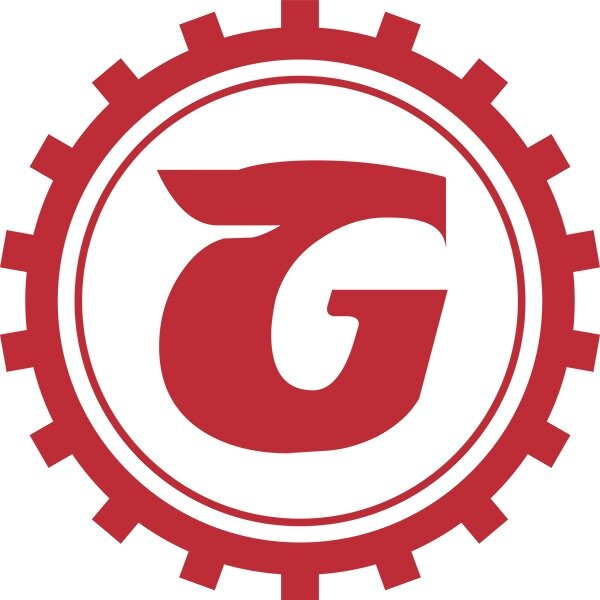

Seattle Brewery Finder

Georgetown Brewing Company
Georgetown Brewing Company, an independently owned Seattle craft brewery and maker of Manny's Pale Ale. In May of 2017, after 14 years selling beer, we went from a draft-only production facility to canning select full-time beers (hey, we always said “never say never”). Sorry, still no brewpub, but we do have a retail shop where you can pick up kegs to go, growlers, cans and perhaps get a taste of our newest beer.
- Georgetown Brewing Website
 Facebook
Facebook Twitter
Twitter Instagram
Instagram Untappd
Untappd
- 5200 Denver Ave S
- Seattle, WA 98108
- hours:
- Monday-Friday: 10am - 6pm
- Saturday: 10am - 4am
- Sunday: Closed
- Phone: (206) 766-8055
- sales@georgetownbeer.com